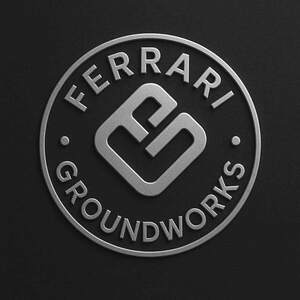

Trade Mark Journal No.2025/042 17 October 2025
UK00004271290 29 September 2025 (37,44)

- Class 37
- Excavation services; Building construction and demolition services; Construction of buildings and other structures; Construction of steel structures for buildings; Building and construction services; Hardscaping services; Building construction; Building, construction and demolition; Building construction and repair; Construction; Construction of foundations for buildings; General building construction services; Services for the construction of buildings; Residential construction; Construction of parts of buildings; Construction of walls; Construction of stables; Construction of greenhouses; Construction of hard-standing areas; Development of land [construction]; Site clearance; Drainage installation; Agricultural and equestrian facility construction; Fencing installation; All of the foregoing excluding services relating to automobiles and other land vehicles, namely vehicle repair, maintenance, cleaning, painting, tuning and detailing.
- Class 44
- Horticulture, gardening and landscaping; Agriculture services; Agriculture, horticulture and forestry services; Agriculture, aquaculture, horticulture and forestry services; Agricultural, horticulture and forestry services; Landscaping [gardening]; Weed killing for agriculture, horticulture and forestry; Horticulture; Landscape gardening services; Landscape gardening; Gardening (Landscape -); Horticulture services; Agricultural services; Gardener and gardening services; Farming services; Gardening services; Gardening.
Gillian Ferrari
Jonathan Ferrari